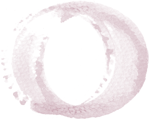

個人セッション

クンダリーニレイキ
ヒーリングセッション
このセッションでは、７つのチャクラをヒーリングをすることで不要になったネガティブなエネルギーを浄化していきます。
心と体と魂のバランスを整え、自然体で心地が良く女性性を解放され愛と豊かさの循環が始まります。
望みに許可を出せ引き寄せは加速し、思考の現実化などが早まります。
60分 ¥5,000
魂の目覚め
オラクルカードリーディング
リーディングでは今、ご自身にとって必要なメッセージを読み取り、魂の声に耳を傾けていく事で陥りがちな思考に気付き解放していきます。
新しいステージをより豊かに自由に過ごせる様に思考の整理整頓をしスムーズに行動できる様にサポートします。
魂の声を頼りにモヤモヤしていた霧も澄み渡っていきます。
30分 ¥3,000
魂の変容の扉を開けるセッション
エネルギーヒーリングでネガティブなエネルギーを浄化しエネルギーを変容させ、オラクルカードリーディングでは今、必要なメッセージをもとにご自身の魂の声に耳を傾けご自身との信頼関係を強めます。
魂の声に耳を傾けられる様になると生きづらかった事から、軽く楽に変容していきます。
より自由に生きる扉が開きます。
90分 ¥10,000
【長期サポート】
人生のミッションを知り
人生を創造するセッション
エネルギーを癒し、使い方を知り人生を豊かに心地よく生きる為の自己変容プログラム
エネルギーヒーリング各種とオラクルカードリーディングを毎月ご自身のテーマに合わせたオリジナルセッションです。
毎月のセッションにより、今まで行ったり来たりを繰り返してしまう方も、毎月繰り返す事に変容を体感出来ます。終了後はご自身で人生を心地よく乗りこなせる様になる為のプログラムです。
しっかりとご自身と向き合い癒し自分らしく生きたい方向けです。こちらはご自身が自ら歩める様になる為のプログラムですので、主体性を持って取り組む前提でお願いします。
私も全力でサポートさせていただきます。
眠っている自分を目覚めさせる事で、もっと楽に軽く自由に豊かな人生を、楽しみましょう。
1回60分×6ヶ月
¥50,000
お客様の声
テキストテキストテキストテキストテキストテキストテキストテキストテキスト
お客様の声をもっと見る